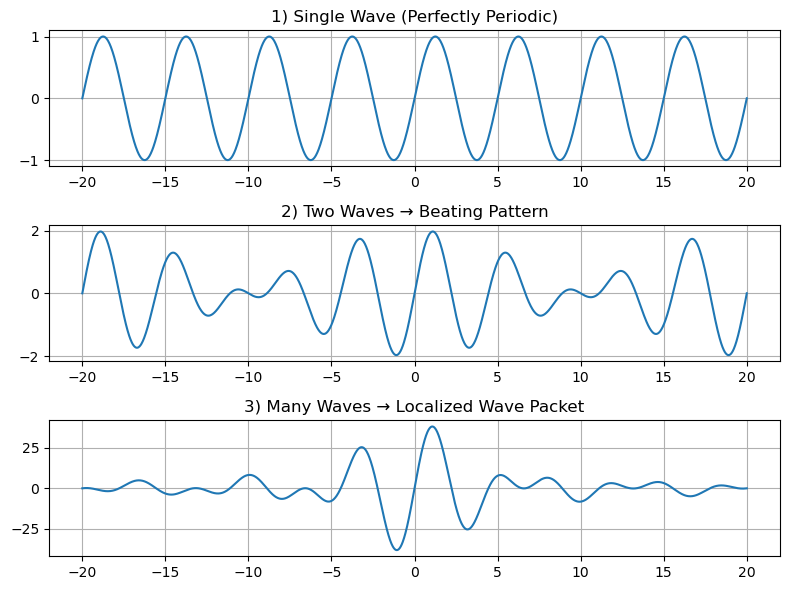
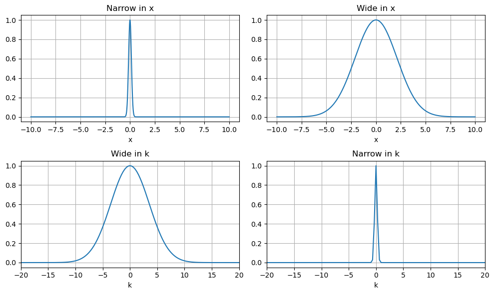

B8.2 Basic Fourier Analysis#
B8.2.1 Motivation: Why Fourier Analysis?#
Before we move deeper into quantum mechanics, we need to understand the basic idea of Fourier analysis.
Many Waves Acting Together#
In classical physics, we are used to describing a wave with a single frequency or wavelength.
But in quantum mechanics, particles are described by wave packets, not just single sine waves.
A single sine wave extends infinitely → not a good description for a particle localized in space.
A localized wave packet is built by adding many different sine and cosine waves together.
Fourier analysis is simply the tool that tells us how to build complicated shapes from simple waves.
Localization and Momentum#
When we talk about a particle’s position and momentum:
Position information comes from how the different waves combine in real space.
Momentum information is tied to the individual wave components (each with its own wavelength).
This idea naturally leads to the Heisenberg Uncertainty Principle:
the more localized the packet, the more wave components (and momentum values) it must contain.
Everywhere in Physics#
Fourier analysis is not just for quantum mechanics:
Acoustics & music – breaking sound into frequencies.
Optics – analyzing diffraction and interference patterns.
Signal processing – used in almost every modern technology.
In quantum mechanics, we will use it constantly to:
Describe wave packets and localization.
Move between position space and momentum space representations.
Why Learn It Now?#
Before we talk about wave packets, probability, and measurement in quantum mechanics, we need to understand:
How combining many simple waves gives us localized particles.
Why knowing position well automatically means less certainty in momentum.
⚠️ Important#
This is mostly a conceptual introduction. No prior knowledge of advanced math is required beyond basic calculus and trigonometry.
B8.2.2 What is Fourier Analysis? (Big Picture)#
Fourier analysis is the idea that any wave or signal can be written as a sum (or superposition) of many sine and cosine waves:
In physics, we often write this more compactly using exponentials:
(Don’t worry about this integral for now — think of it as just adding up many \(k\) components.)
Everyday Examples#
Music: A musical note is a combination of many frequencies.
Square waves: Built from a fundamental frequency + harmonics.
Localized bumps: Need many different wavelengths to “shape” the packet.
B8.2.3 Superposition of Waves: Building Complexity#
Let’s start simple:
One sine wave: perfectly periodic.
Two slightly different sine waves: produce a “beating” pattern.
Many sine waves: can create a sharply localized bump.
We’ll demonstrate this below.

Interpretation#
Adding just two frequencies produces beats (slowly varying envelope).
Adding many frequencies produces a wave packet localized in space.
The more frequencies (or wavenumbers \(k\)) we include, the narrower and more localized the packet becomes.
B8.2.4 Localization vs Range of Wavenumbers#
This is a general rule of Fourier analysis:
Mathematically (don’t memorize yet):
Intuitive Analogy#
Sharp edges need many frequencies:
To make a very sharp corner in a drawing, you need to combine lots of different pencil strokes.A single frequency = smooth & infinite:
A single sine wave repeats forever → no localization.
Why We Care#
When we describe particles as waves, a localized particle (small \(\Delta x\)) must contain many wavenumber components (large \(\Delta k\)).
This will lead directly to the Heisenberg Uncertainty Principle.

B8.2.5 Summary#
Any signal or wave can be built from many simple sine/cosine waves.
Adding more frequencies allows you to build localized packets.
Narrower localization in \(x\) means a wider range of \(k\) values.
This trade-off is fundamental to quantum physics.